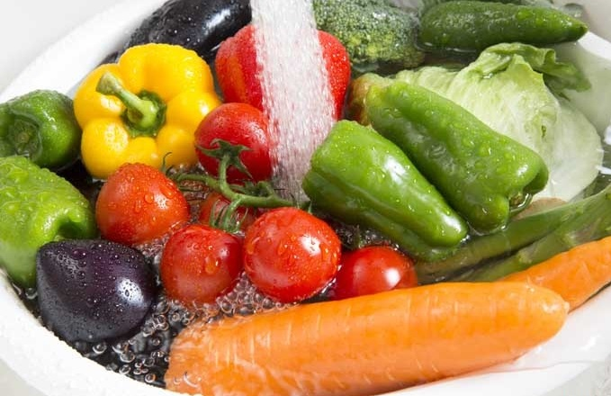

Clean and Fresh Vegitables
* * *
Why Should We Wash Fruits and Vegetables before Eating?
The fruits and vegetables you eat are loaded with pesticides and chemicals, making it harmful to human health. Pesticides are primarily used for cultivation of crops and in some cases as residues. Fruits and vegetable, however, possess a high amount of pesticides. High levels of chemicals and pesticides pose a threat to human health by damaging the nervous and reproductive systems, disrupting the immune system, and even leading to cancer in some cases. The risk factors make it necessary to wash vegetables in the right way to stay safe from diseases. Read on to find out why it is important to clean vegetables and fruits properly before consumption.
Which Food Items are at a Higher Risk?
While all the food items get contaminated easily, some food items harbour more contaminants than others. Be extra vigilant when it comes to the following food items:
Melons:
The exterior of melons is rough, which is the reason why rinsing it will not remove the dirt and contaminants present on the surface. Use a vegetable and fruit cleaner to remove the contaminants from the surface of food items.
Sprouts:
The thumb rule is to avoid storing sprouts for a long time. Eat the sprouts within 1 or 2 days of buying. Make sure you keep sprouts refrigerated and wash them before consumption.
Strawberry:
Strawberries usually contain a high amount of pesticides. It has been found that one-third of all the strawberries contain ten or more pesticide residues.
Spinach:
Spinach contains pesticide residues like permethrin, a neurotoxic insecticide that is highly toxic to animals. Approximately 97% spinach comes with pesticide residues.
Apples:
90% of apples have pesticide residues. Apples contain traces of diphenylamine (pesticide).
Potatoes:
One of the most consumed vegetables, potato contains more pesticide residue than any other crop or vegetable. An herbicide named Chlorpropham can be usually found in potatoes.
Organic produce:
Even if you buy organic produce, make sure you wash them before consumption. Organic produce has pathogens, which is the reason why you need to wash the organic produce with KENT Vegetable and Fruit Cleaner, as it helps remove pathogens from surface of food items easily.
Homegrown produce:
Homegrown veggies also need to be washed with care. If you have pets or have the garden in an open area, you need to be extra careful with cleaning homegrown produce.